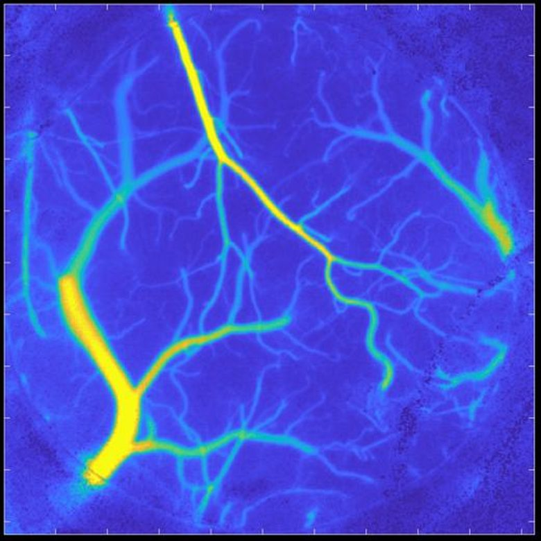
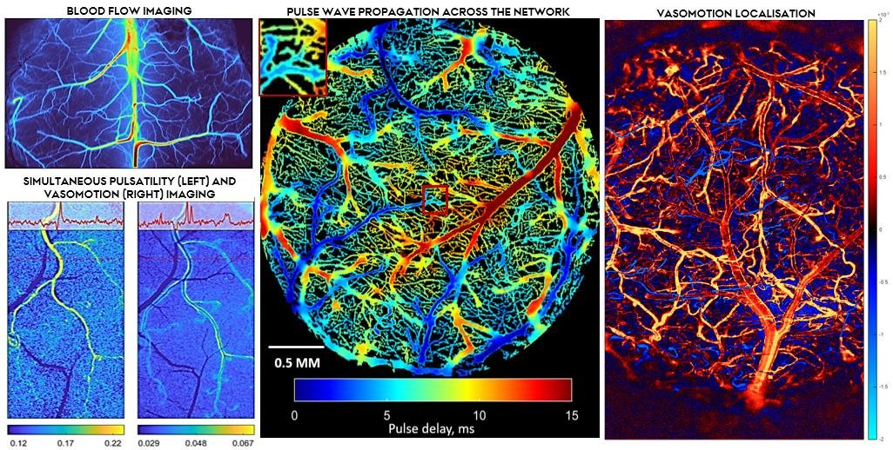
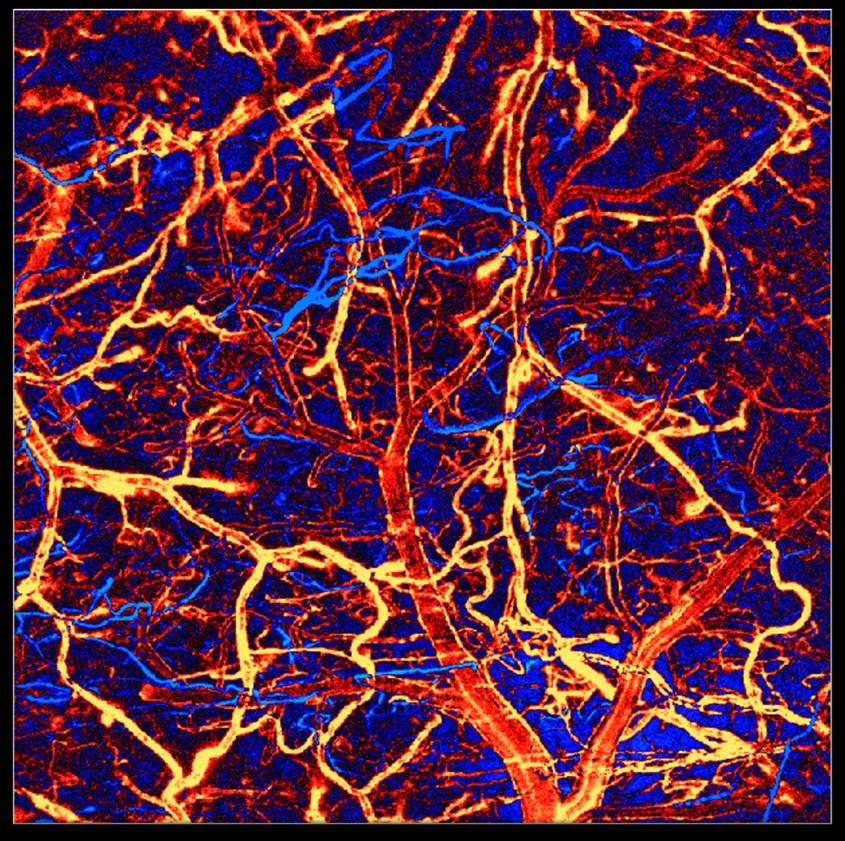
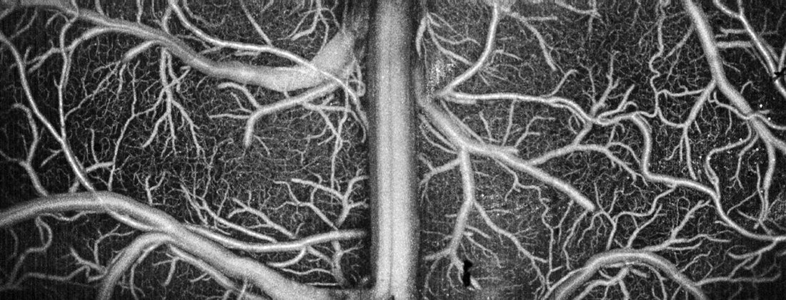
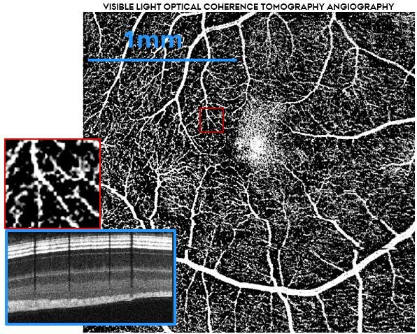
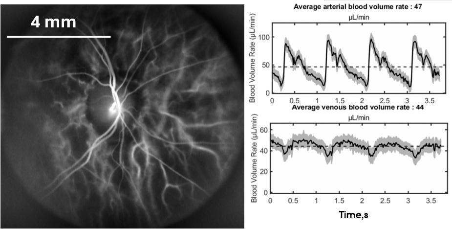
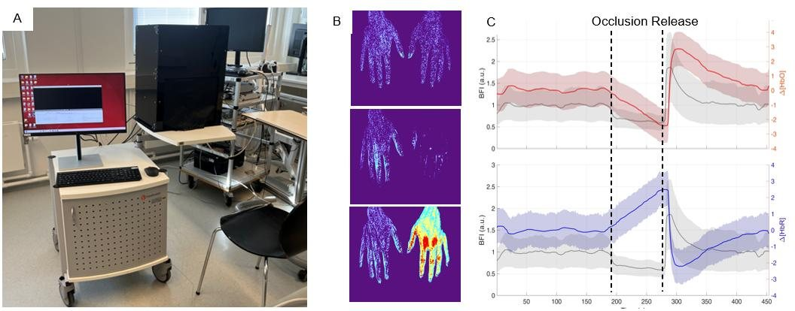
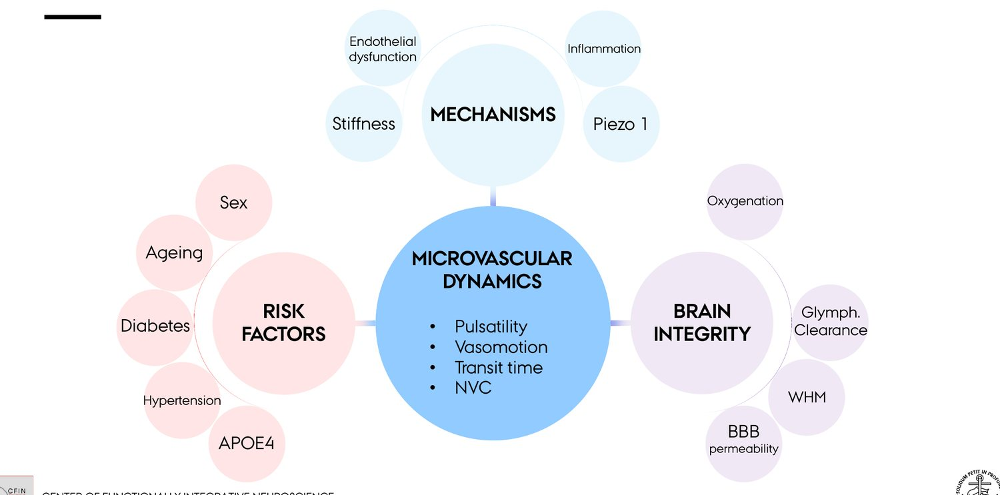

We investigate microvascular dynamics as a key link between cardiometabolic risk factors and dementia, pioneering translational optical imaging to uncover novel diagnostic biomarkers and therapeutic targets.
The Blood Flow Imaging Group develops and applies novel optical imaging methods to advance the understanding and diagnosis of cardiometabolic and neurovascular disorders. We work across the full translational chain — from physics and instrument design, through pre-clinical experiments, to imaging in patients — with the conviction that the same optical principles can reveal microvascular health in animals and humans alike.
Alongside our research, we have established — and now manage and continue to expand — a Translational Optical Imaging Infrastructure: a suite of contrast-agent-free imaging systems available to researchers across Aarhus University and beyond. More detail follows in the second section below.
Our research and infrastructure are supported by:
As of May 2026, the group is led by the PI Dmitry Postnov and includes two postdocs and three PhD students. Members bring diverse backgrounds, with work spanning pre-clinical experimental biology, clinical imaging, optical engineering and data science — the mix that makes genuinely translational imaging possible.
We are always open to collaborations and warmly welcome prospective members who would like to apply for funding to join the lab. If that's you, email dpostnov@cfin.au.dk with your idea and the funding you plan to apply for — we will support you as much as we can.
Open calls for specific roles are announced whenever the group secures the associated funding.
At its core are contrast-agent-free technologies that non-invasively probe perfusion and chromophore dynamics in the brain, retina, skin — and, in principle, any exposed organ. Because the same physics applies in animal models and humans, the infrastructure yields shared biomarkers across species, complemented by wide-field fluorescence microscopy and a planned expansion toward photoacoustic imaging.
The infrastructure has been assembled entirely with competitive external funding and is available to other researchers at AU; where relevant it can also operate as a core facility offering data analysis and interpretation support. A long-term goal is to establish the first data bank for optical imaging modalities.
Wide-field, label-free imaging of blood-flow dynamics. Coherent light scattered by moving red blood cells forms a fluctuating speckle pattern whose blurring encodes perfusion — mapped continuously across large fields of view, in cortex, retina or skin.

A custom, patented platform combining LSCI, Dynamic Light Scattering Imaging (DLSI) and fluorescence, reaching thousands of frames per second. It resolves the fast events that conventional imaging averages away — pulsatility, vasomotion, pulse-wave velocity and microvascular stiffness — across the whole vascular network.

Tracks fluorescent tracers through the microvasculature to quantify transit-time heterogeneity and vasomotion, and to follow glymphatic clearance, blood–brain-barrier permeability and amyloid accumulation in pre-clinical models.

Depth-resolved structural imaging and angiography of microvascular networks at micron-scale resolution, providing the anatomical context for our functional flow measurements.

Extends OCT into the visible spectrum to add label-free oxygenation readouts alongside ultrastructure. We operate the first — and currently only — rodent and human retinal visOCT systems in Denmark.

High-speed holographic imaging of the human retina that recovers absolute arterial and venous blood-flow waveforms and pulse-wave velocity within seconds. Now installed for clinical use at AUH Ophthalmology.

A clinical instrument pairing LSCI with multispectral / hyperspectral imaging to read out skin perfusion and oxygenation, condensing large imaging datasets into interpretable microvascular biomarkers. Deployed across multi-thousand-subject clinical studies, with a second-generation system coming to CFIN.

Across our projects runs a single guiding hypothesis: that cardiometabolic risk factors reshape microvascular dynamics — pulsatility, vasomotion, transit time and neurovascular coupling — and that these altered dynamics act at once as a consequence, a cause and a marker of declining brain integrity.

Advancing High-Speed LSCI to extract sensitive microvascular biomarkers and uncover the shared hemodynamic mechanisms that link hypertension to Alzheimer's disease, in clinical and pre-clinical models.
Testing how microvascular stiffening of resistance vessels in diabetes disrupts autoregulation and neurovascular coupling, driving the cognitive decline that raises dementia risk.
Advancing a non-invasive multimodal platform for assessing systemic microvascular function through skin perfusion and oxygenation, and initiating the CE-marking process for the device.
Assessing the diagnostic potential of multimodal skin perfusion imaging in coronary and systemic microvascular disease, alongside a randomised trial of anti-inflammatory treatment.
Establishing and validating a new diagnostic component for angina based on non-invasive peripheral perfusion imaging and individualised vascular-response assessment.
These build on the group's foundational work, including the “Optical biopsy” programme (Novo Nordisk Foundation, 2017–2021) that corrected longstanding theoretical inaccuracies in laser speckle and Doppler imaging, and earlier studies of renal microvascular dynamics.